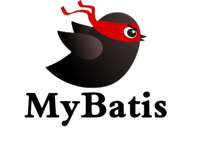
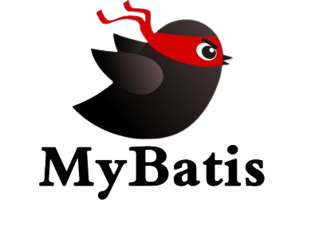

파이널 프로젝트 2024.06.24 ~ 2023.08.27
전기차 충전 관리 웹

Keyword
# Spring boot # webSocket # postgreSQL # JAVA # JS #
JQuery # aJax # Json
# CRUD # 게시판 # 상태 실시간 변경
Function
개발인원 : 1명
전체적인 전기차 주차 관제앱으로 주차된 위치에 차량의
실시간 상태 변화를 볼 수 있습니다.
또한 전기차 충전 관리 이므로 전기차가 아닌 차량에
대한 식별과 그에 따른 상태 변화가 가능합니다.
관리자는 상태 변경 및 각 카테고리에 대한
추가/삭제/수정이 가능합니다.
또한 관리자는 직원 리스트를 볼수있으며 직원의 직급
및 상태 등 여러 정보를 수정할수 있습니다.
Development Environment
OS : Mac OS sonoma 14.5
Library : Spring Boot, JSTL, jQuery, aJax, Lombok,
webSocket, BootStrap , postgreSQL
Language : HTML5, CSS3 , Java(openJDK 17.0.10),
JavaScript
Database : postgreSQL, DBeaver
WAS : Apache Tomcat11
IDE : intelliJ Community , vs Code
Service Environment
OS: Ubuntu (20.04)
Platform : AWS Lightsail